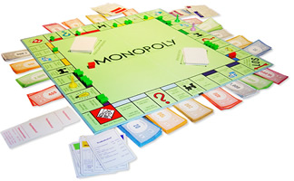

Enoncé
Dans ce challenge, l'objectif est de déterminer le moment où un joueur donné est ruiné au jeu du Monopoly. On va supposer que le joueur ne fait que perdre de l'argent et qu'il ne reçoit rien lorsqu'il passe par la case départ. Le plateau est composé de 40 cases numérotées de 1 à 40. La somme dont le candidat dispose à l'origine vous sera fournie dans les données en entrée. Le montant positif ou nul que le joueur paye lorsqu'il arrive sur une case donnée vous sera aussi indiqué dans les données en entrée. Pour se déplacer le candidat jette une paire de dés et se déplace de la somme des chiffres indiqués par les dés.
Par ailleurs, la case numéro 20 est la case Allez en prison. Si le joueur tombe sur la case 20, il retourne à la case 10. Pour simplifier, on va supposer que le joueur peut sortir de prison immédiatement (dans un vrai Monopoly, il y a des conditions pour sortir de prison).
Vous devez déterminer à quel moment le candidat n'a plus d'argent, c'est à dire le moment où le candidat n'a pas assez d'argent pour payer le montant correspondant à la case sur laquelle il arrive. Votre code renverra le numéro de la case sur laquelle il se trouve lorsque ce moment est atteint.
Le joueur débute sur la case 1. Les fichiers de données seront tels que ce moment sera toujours atteint.
Format des données
Entrée
Ligne 1 : un entier représentant la somme dont dispose le candidat entre 10 000 et 200 000.
Lignes 2 : 40 nombres séparés par des espaces indiquant le montant que doit payer le candidat s'il arrive sur les cases 1 à 40. Le montant est compris entre 0 et 4000
Ligne 3 : une série contenant un nombre pair de chiffres entre 1 et 6 séparés par des espaces. Ces chiffres représentent les lancés de dé du joueur. Le joueur lance 2 dés à chaque tour.
Sortie
Un nombre entre 1 et 40 indiquant le numéro de la case où le candidat n'a plus d'argent.